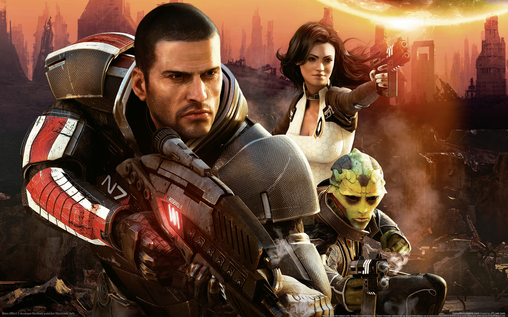
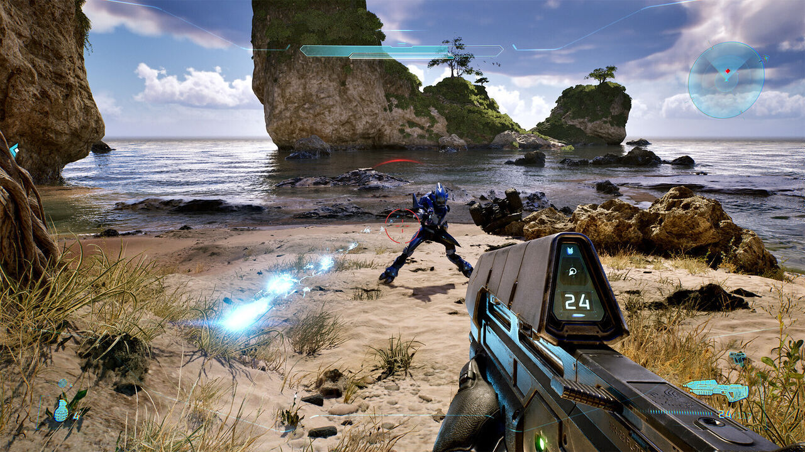

Inicio > Posts > Videojuegos
Te recomiendo 5 videojuegos para cerrar el año.
- por Alejandro Romero
- Subido: 11/09/26
Desarrollado por Google DeepMind, SynthID es una herramienta de marca de agua digital diseñada para
identificar contenido generado por inteligencia artificial.
A diferencia de las marcas de agua tradicionales (como un logotipo superpuesto que puede recortarse o borrarse
fácilmente), SynthID se integra directamente en los medios:
#5 Mass Effect 2

Mass Effect no tenía sentido. No era ir pegando tiros en el espacio; era que te metía en dilemas durísimos y
tus cagadas te perseguían de un juego a otro. Tomar una decisión en el primero y que te explotara en la cara
tres años después es una genialidad.
La política intergaláctica y las tensiones entre razas se sentían reales. Pero lo que de verdad te enganchaba
era tu gente. La Normandy era tu casa y tu tripulación te importaba en serio.
Un viaje brutalmente personal que te hacía sentir que la galaxia te quedaba gigante. Por eso, pasen los años
que pasen, ninguno se le acerca.
#4 Dofus

No era solo el vicio de subir de nivel; era la economía brutal basada en que absolutamente todo lo hacían los
jugadores, el mercadillo, y el bendito farmeo para conseguir ese set que te hacía brillar. Y las peleas
tácticas... o pensabas bien dónde te parabas y qué hechizo usabas, o tu grupo terminaba muerto en una mazmorra
por un paso en falso.
Pero lo que de verdad lo hacía único era la comunidad. Las alianzas, los gremios, las guerras por los
territorios de Pandala o Frigost, y el drama de que te robaran el botín en tu cara. Era un micromundo
jodidamente vivo y despiadado.
Al final, Dofus demostró que no necesitabas gráficos hiperrealistas para crear un universo adictivo y con una
personalidad gigantesca. Por más años que pasen, el sonido de subir de nivel o la música de Astrub nos van a
seguir dando nostalgia pura.
#3 The Elder Scrolls V: Skyrim

Salías de esa bendita cueva inicial y el juego no te decía qué hacer; te soltaba en un mundo gigantesco y si
querías ignorar por completo la crisis de los dragones para irte a cosechar flores o a robarle las manzanas a
un granjero, podías hacerlo. Esa libertad tan absurda es algo que casi nadie ha logrado replicar bien.
El sistema de progresión era una genialidad: mejorabas lo que usabas. Nada de menús aburridos para repartir
puntos; si dabas espadazos, subías espada, y si te la pasabas agachado en las esquinas, terminabas siendo el
maldito dios del sigilo.
El mundo se sentía vivo porque estaba lleno de cuevas irrelevantes, facciones con sus propios dramas y libros
con un lore loquísimo que nadie te obligaba a leer.
Al final, Skyrim se convirtió en una especie de hogar virtual. Da igual cuántas veces escuches el meme de
"Hey, you're finally awake" o cuántos años pasen; la música en mitad de la nieve te sigue atrapando como el
primer día.
#2 The Witcher 3: Wild Hunt

Cuando todos los mundos abiertos eran mapas vacíos con misiones de recadero aburridas, este juego te metía un
dilema moral durísimo hasta en el contrato de monstruos más simple de cualquier tablero de anuncios.
Geralt no era el típico héroe que quería salvar el mundo; era un mercenario cansado, sin un centavo, buscando
a su hija adoptiva en medio de un nido de víboras político. Aquí no había decisiones de "bueno o malo", solo
elegir el mal menor y cruzar los dedos para que las consecuencias no te explotaran en la cara más adelante.
Esa atmósfera tan sucia y viva, la música que te ponía la piel de gallina y la obsesión de mandar el fin del
mundo al diablo con tal de jugar al Gwent en una taberna mugrienta... Por eso sigue siendo insuperable.
#1 Halo

En una época donde los juegos de disparos en primera persona eran casi exclusivos de PC, este título llegó a
demostrar que con un control de consola se podía jugar igual de bien, redefiniendo el género para siempre.
Pero no era solo disparar por disparar. La atmósfera de ese anillo gigante y misterioso, la relación entre el
Jefe Maestro y Cortana, y esa banda sonora con cantos gregorianos que todavía te pone la piel de gallina, te
hacían sentir dentro de una verdadera ópera espacial.
Y lo mejor, sin duda, eran las tardes de pantalla dividida con tus amigos, gritándose en la misma sala. Ningún
juego de ahora ha logrado replicar esa magia de jugar juntos en el sillón. Por eso sigue siendo una leyenda
absoluta.